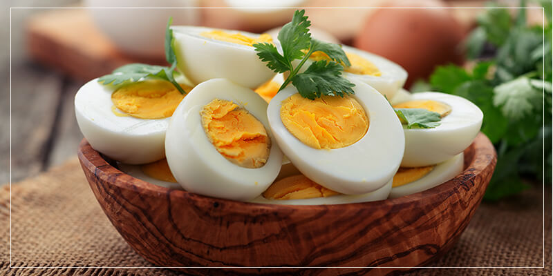
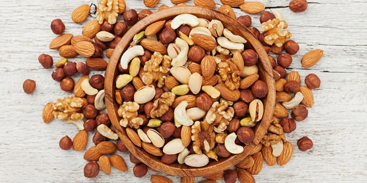

Eggs
When it comes to protein, few foods can top eggs – they’re not only rich in that important nutrient but also contain all 9 essential amino acids that the body needs. One of the 9, leucine not only helps stimulate energy production but also increases fat breakdown to produce energy.

Fish
Like eggs, some fish – salmon, mackerel, and sardines to name a few – are sources of complete protein. They’re also rich in vitamin D, another important nutrient that affects energy creation in the body. Insufficient vitamin D can lead to low energy and muscle fatigue.
Quinoa
Befitting its superfood status, quinoa is packed with nutrients that benefit the body in many ways. While it is fairly high in carbs, it has a low glycemic index (GI) so the carbs are absorbed slowly and provide sustained energy release. Quinoa is also rich in vitamin B2, which improves energy metabolism in the brain and muscle cells.

Hummus
It’s great as a dip, sandwich spread or salad dressing, and a great source of energy too. All of this is due to the combination of chickpeas, tahini, oil, and lemon. Chickpeas provide steady energy as it’s a complex carbohydrate and high in fibre, whereas tahini contains healthy fats that help slow down the absorption of carbs, avoiding spikes in blood sugar levels.
Sweet Potatoes
They’re naturally sweet, packed with fibre and nutrients, and are one of the most delicious sources of complex carbohydrates. Sweet potatoes also provide you with vitamin C, which plays the important function of transporting fats into cells to produce energy.
Spinach
Iron and magnesium are both important players in the energy production process and spinach is rich in both. The dark leafy green has the added benefit of increasing levels of serotonin, the hormone that makes us feel happy.
Apple
You know the saying about eating an apple a day to keep the doctor away. Well, it’s also a good source of slow, sustained energy release as it’s rich in natural sugars and fibres. Another plus point is its high antioxidant content, which helps the body digest the sugars slowly and then releases energy over a longer period of time.
Nuts
You can snack on them, cook with them, churn them into butter… nuts are one of the most versatile foods around and they’re also dense in energy, with high levels of healthy fats. These five nuts are particularly ideal if you want to improve your energy levels: Macadamias, almonds, Brazil nuts, pistachios, and walnuts.
